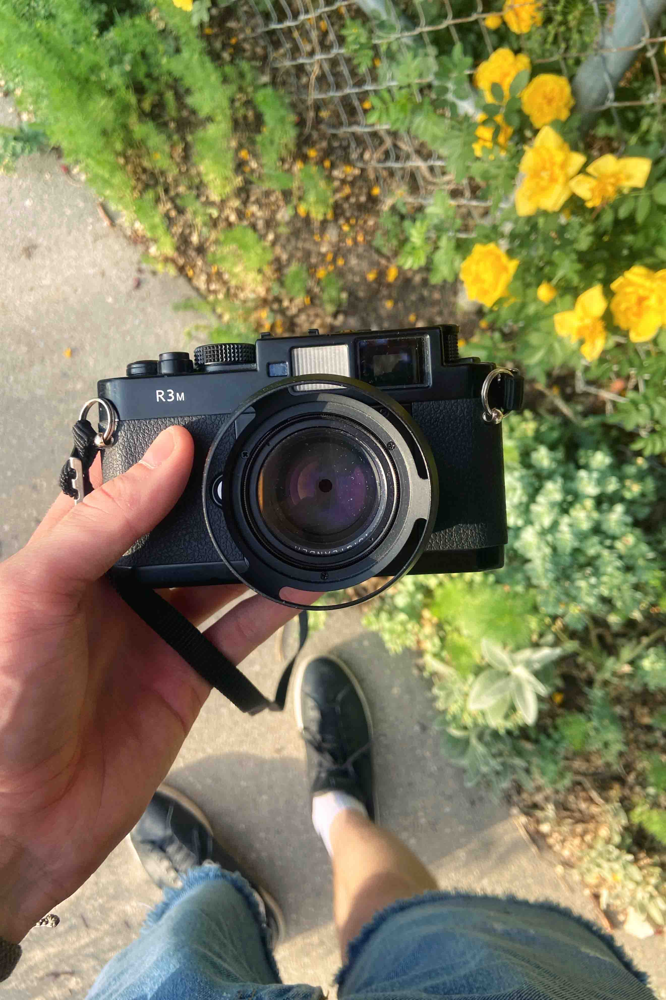
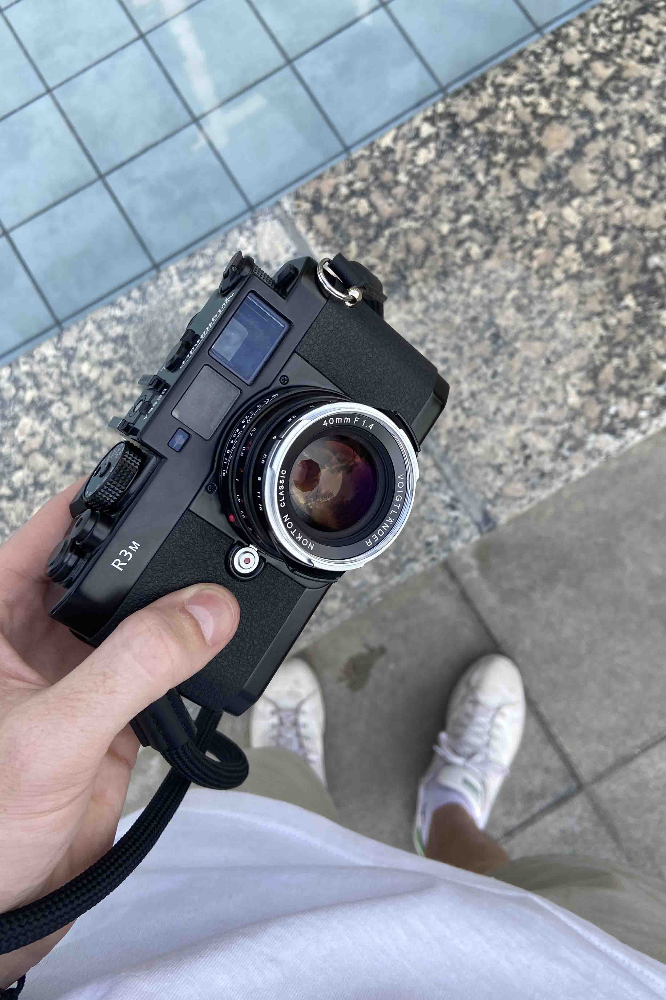
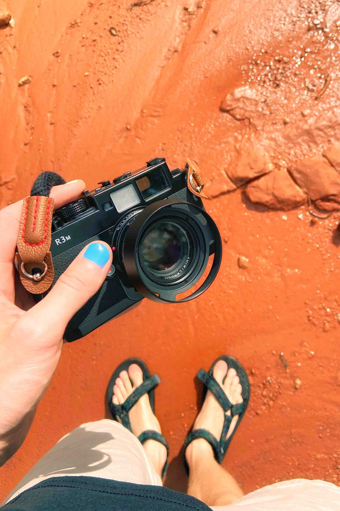
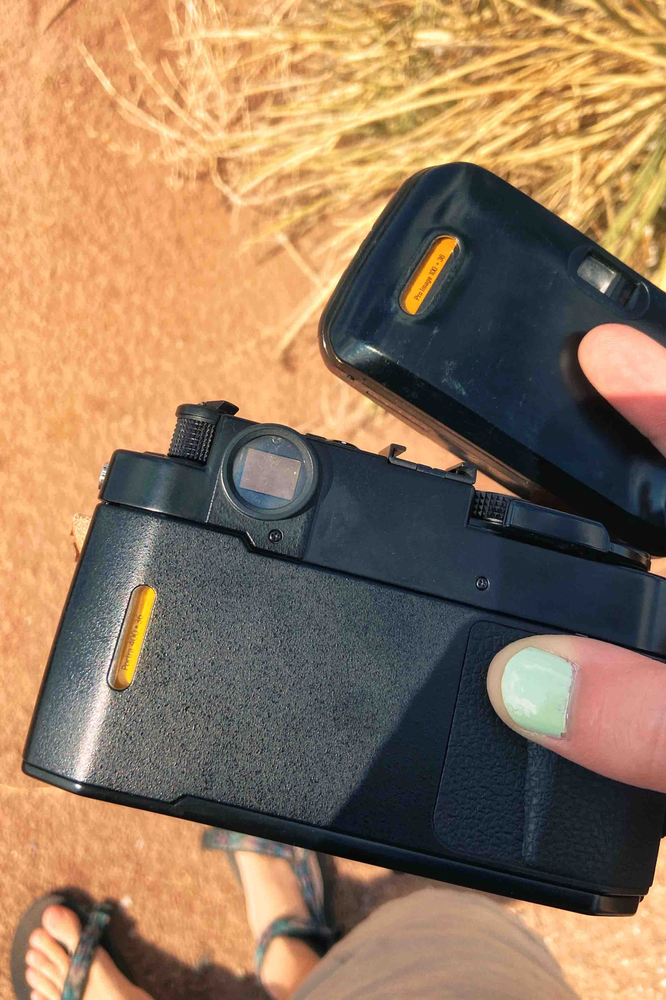
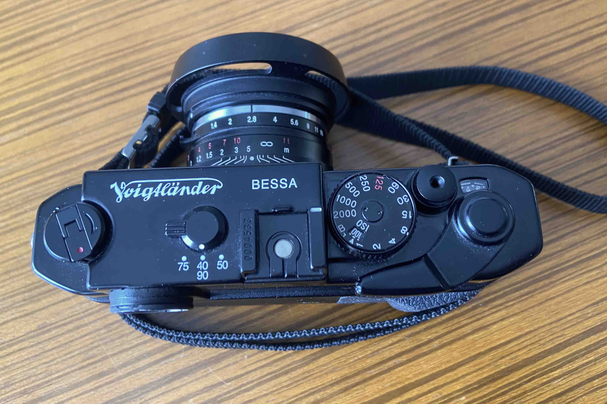
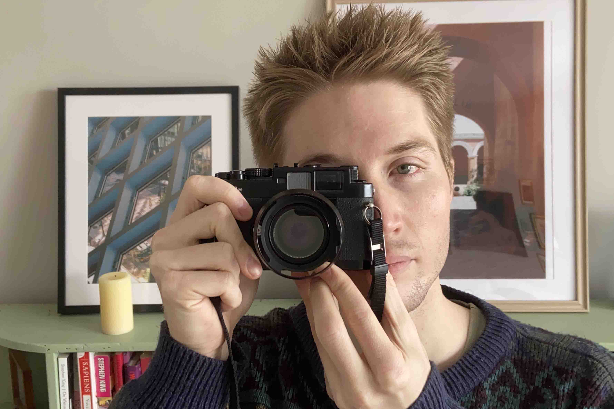

VOIGTLANDER BESSA R3M: MY FOREVER CAMERA
JANUARY 14 2024
So, I revived the blog in the last post, post 33, and now we'll go back in time to June 2021, right after my great film disaster on Saint John and coincidentally the same month I was gifted the nicest camera I've owned to date. You win some and you lose some right...
I might not have deserved such a nice present from my parents after taking blurry pictures of them for 2 weeks on our family vacation, but I graduated college the year before in 2020 and they were looking for a good graduation present. It just so happened that when we got back from Saint John an almost mint Voigtlander Bessa r3m with 40mm 1.4 was listed on KSL, our local classifieds website. By this time I had been shooting film for a little while, I was clearly in love with it and my parents thought it was an excellent idea for a present. Their one caveat was that I NEVER sell the camera (I had been buying and selling a ton of cameras leading up to this). So that's how the Voigtlander became my forever camera. And after putting a dozen or so rolls through it I can say it's earned that title.


Calling something my forever camera is a big claim so I'll make sure to give you all the details and pros and cons. But the most important thing to keep in mind throughout this review is that the camera was a gift from my parents, and that already gives it a leg up on the rest of my collection. The Bessa would have been a forever camera no matter what.. it just so happens that it's also an amazing camera.



BUILD + DESIGN
The Bessa r3m is a beautiful camera. It's all black with a very cool "geometric" design. I'm not much of a designer so I can't really explain it well, but I think it looks nice. And I mean you can see it in the pictures, it's good looking camera, but of course that's subjective. So lets talk about some of the objectively good things about the build/design. 1st, it has a nice thumb grip on the back, i'm a sucker for a good thumb rest (it's one of the big reasons I love the Minolta X-700) so I love that the r3m has one too. 2nd, it has a really solid magnesium alloy build, it feels very sturdy but surprisingly light at the same time. There are some plastic components but I'll touch on those later. 3rd, it has an M lens mount. HUUUUGE plus right there because it opens up the door to Leica glass, as well as Voigtlander lenses which I've been really impressed with. 4th, a normal back door for loading film (I don't think this one is objective anymore hahaha, but I really enjoy the normal film door on the Bessa r3m compared to the quick loading system of the Leica M rangefinders). 5th, cute little film window on the back. Those are always great.

As far as the layout goes it's exactly what you would expect. There's a shutter speed dial, shutter button, and advance lever on the right side of the camera, and a rewind lever on the left side of the camera. There is a frameline selector switch in the middle of the camera which is probably the one thing that sets the layout apart from your run of the mill slr.. but in practical use (for me at least) it's almost as if that switch doesn't exist. My 40mm lens is glued to that camera so I never mess with the frameline selector. But, I could see it turning into a con if you switched lenses all the time and always had to remember to change the framelines.

And the last thing that I want to mention in this category is that the r3m has a metal focal plane shutter. This detracts slightly from the stealthiness of the camera but I love it for the peace of mind when walking in the sun. Ever since learning that you can burn through cloth shutters I've had nightmares about doing it with my M6.
FEATURES
Lets dive into the features shall we!? Because there are some really great one's on the r3m. The main one that you've probably heard about before if you know about this camera is that it has a 1:1 viewfinder magnification. This means that everything you see through the viewfinder while you are focusing and composing is the same size as real life. So, you can technically use the camera with both eyes open without any distortion. Cool and all, however, I've found that to be more of a fun fact than actually useful, I don't think I've ever taken a picture with both eyes open. But, it is fun to look through the camera with both eyes open. It's almost like using a camera with a heads up display, which is really cool but I've used too many SLR's for it to feel natural.

The best thing about the 1:1 magnification that I've found is it makes the subject as large as you can get it (with a rangefinder) which makes composing and focusing* a little easier and quicker.
*This isn't considering the effective base length of the camera which is actually quite small(37mm) and it contributes to the rangefinders accuracy, this is just a statement that in my experience the focus feels snappier because the subject is larger and I can align the rangefinder patch with my desired focus point quicker. Regarding the accuracy of the camera I have not run into any issues but at the same time I don't shoot with low apertures that often.

The one drawback of the 1:1 magnification is that the widest framelines are 40mm. Which is fine for me, like I said the 40mm lens is glued to my camera, but if you love wide lenses than this probably wouldn't be your forever camera. My go-to lens is the 50mm so I have no complaints with the framelines and I have been enjoying the 40mm quite a bit, it's like shooting a 50mm with a little extra breathing room.
Other than having the 1:1 magnification the camera is pretty basic. It's fully mechanical so there aren't any AE modes but it does have a built in light meter with a -2 to +2 readout that blinks if you are under or over exposed... and it has a 1/2000th max shutter speed which is pretty fast and cool I guess.

IMAGE QUALITY
And now, we've finally made it to the section that matters most. The image quality. And i'm going to start off by saying the quality that this camera can produce is INSANE.

There are a lot of factors that contribute to image quality and the camera body is probably the least important among them, but the Bessa r3m was the first camera that I used with a seriously nice lens. And I noticed the difference right away. Before the r3m I was using Nikons and Minoltas with sub $150 lenses from eBay, which, don't get me wrong, were still decent lenses, but the 40mm 1.4 really elevated the images from the Bessa r3m and made it my first choice whenever I was looking for the best results.


The 40mm lens is really sharp and renders things with a lot of saturation (I love saturation so it's great for me) and paired with the very portable body of the r3m it's a great camera to take everywhere and capture all sorts of fun moments. Simply put it's a fantastic camera to bring a long and to document life, which lends itself perfectly to being my forever camera.
Another thing that I really appreciate about the images from the Bessa r3m is how natural it is to take them. This isn't exactly related to the image quality and honestly it probably has more to do the the rangefinder system in general, but I've found that it feels like second nature to use and take pictures with this camera.


SOME NOTES/ CONCERNS
I've said it a number of times in this post; the Voigtlander Bessa r3m is my forever camera. But that doesn't mean it's a perfect camera. It works great for me but it has a few pitfalls that I can overlook. Nothing's perfect though, so I'm just happy that I found a camera that works so well for me.
Both issues with this camera are pretty minor, but the biggest one, that I don't really have a good picture to demonstrate, is how the top of the camera falls into you when you carry it.

It's not that big of an issue if you like to carry the camera on your side but if you have the camera dangling on your chest the top plate will eventually start digging into your ribs. It can become really annoying, so to avoid this issue I use an extra long camera strap to carry the camera across my chest.
The exact strap that I use is an old Pentax strap that I've never been able to find again on eBay but it's not particularly special other than the length. If I had to buy a replacement now it would probably be the Long Weekend strap in black (here) because who doesn't want to help support our boy Willem.
I have heard that a permanent solution to this issue is to use Voigtlander's dedicated side grip which makes the camera less top heavy. This would fix the problem of carrying it on your chest too, but it costs around $80-100 + shipping on eBay and it really doesn't bother me enough to justify it. But if you are a fan of carrying it on your chest you have options.
And the other thing that can be considered a con is that you are stuck with 40mm framelines as the widest option. If you know what you're getting yourself into with this camera than this shouldn't be a con, but if you're looking at this camera and on the fence about using wider lenses than it might not be the best camera for you.
Of course you can still use this camera with any M lens... the framelines don't dictate what lenses you have to use, I'm just saying it might be less than ideal if you're using anything wider than 40mm.

And two more things to mention before wrapping up this review. 1st, there are some plastic components like the back door and locking lever, as well as some internal components. Nothing that has been problematic but it would have been nice if everything was metal. 2nd, the camera was produced in 2006 so it hasn't stood up to the test of time like some legendary cameras. But that could just as easily be viewed as a pro if you trust that the r3ms were built well. But only time will tell and in the meantime I'll just keep my fingers crossed and hope that mine will last for, well.. forever.